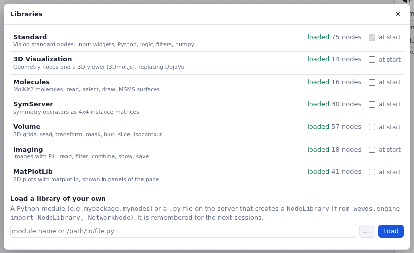

Node libraries
The libraries of nodes that come with WEWoS, loading them, and loading your own.
Loading libraries
Libraries load on demand, as in Vision. When the server starts, only Standard (and the libraries marked at start) is in the list; Libraries… (or + Load a library… under the list) loads the others. Opening a network, an example or an imported Vision network loads the libraries it uses.

The libraries
| library | nodes | what is in it |
|---|---|---|
| Standard | 75 | Vision's StandardNodes: input widgets (dials, thumbwheels, entries, file and folder browsers, check buttons, lists), file names and file lists, reading and writing lines and tables, Python (iterate, while, accum, eval, call method, getattr, map, range, zip…), filters (index, slice, select, cast, Op1/Op2/Op3), logic (if, isTrue, isTrue_Stop), numpy (ufuncs, astype), print and more |
| 3D Visualization | 14 | DejaVu's nodes (vizlib): the Viewer, One Redraw, Spheres, points, Cylinders, IndPolylines, IndPolygons, GlfLabels, box, axis, GeomContainer, Set Geom Options, Read Mesh, and Color Map with its editor and legend |
| Molecules | 16 | MolKit2 and ProDy: Read Molecule, Fetch PDB, Assembly Matrices (a PDB file's biological assembly), Assign Radii, Extract Atom Property, Select, Sequence, Picked Atom, CPK, Sticks, Lines, Cartoon, Surface, MSMS, MSMS triangles, Write PDB |
| Volume | 57 | MGLTools' Volume: reading maps (AutoGrid, CCP4, MRC, CNS/XPLOR, DX, Delphi, GRD, BRIX, SPIDER, UHBD, Rawiv, AVS/FLD, numpy), writing CCP4 and Rawiv, statistics, masks, clipping, transforms, resampling, Gaussian blurring of molecules, isocontouring (UTiso, UT-Isocontour) with its contour spectrum, signed distances, meshing, slices, boxes, and a coarse molecular surface macro (CoarseMolSurf) |
| SymServer | 30 | symserv: n-fold axes (2- to 6-fold and N-fold), helix, super-helix, rotate, translate, orient, scale, merge, multiply, split, inverse, transpose, distance to a point, center of mass, the Icosahedral1 and IcosCage macros, reading and saving matrices |
| Imaging | 18 | Pillow: read, show, save, grab a viewer's picture, filters, invert, split, masks, paste, blend, multiply, composite, rotate, transpose, scale, statistics |
| MatPlotLib | 41 | Vision's matplotlib nodes (see Images and plots) |
Hovering over a node in the list shows what it does; the parameter column of a node has About this node.
Your own libraries
A library of your own is a Python module, or a .py file on the server, that makes a
NodeLibrary and adds nodes to it (see Writing your own
nodes). Type its module name or its path in the Libraries dialog, or choose the file with
…, and press Load. WEWoS remembers it in libraries.json, in the folder of the
networks, and offers it again at the next start.